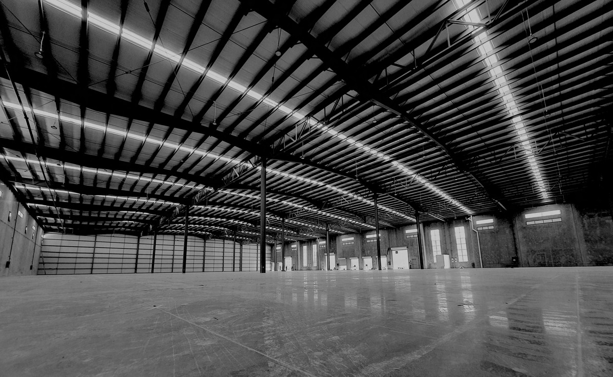
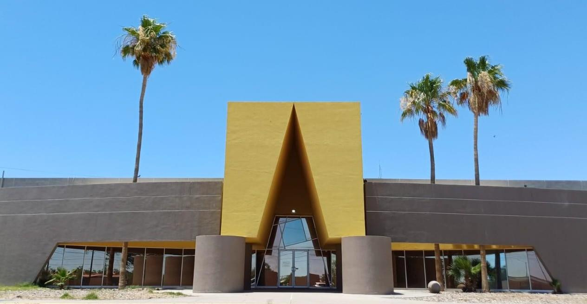
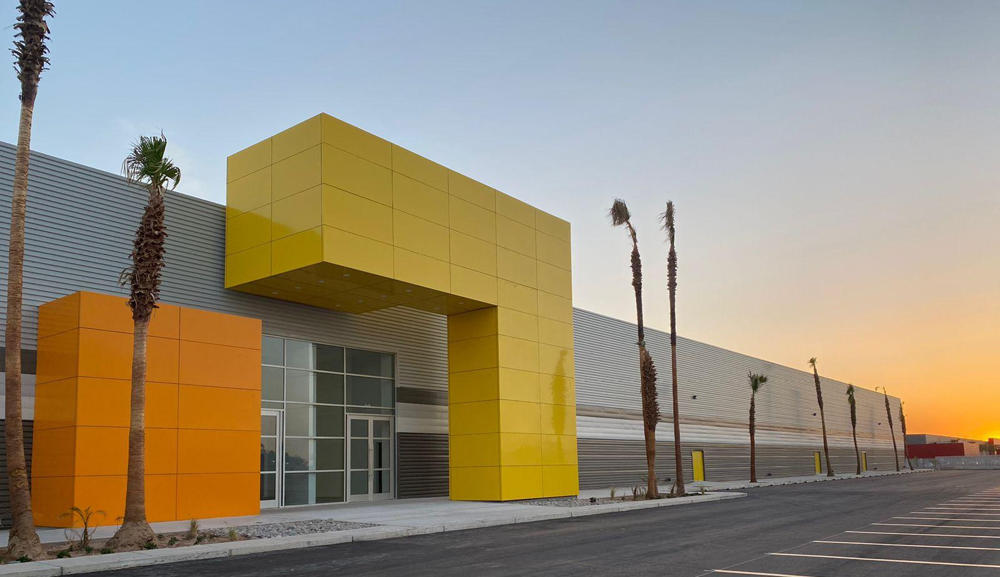
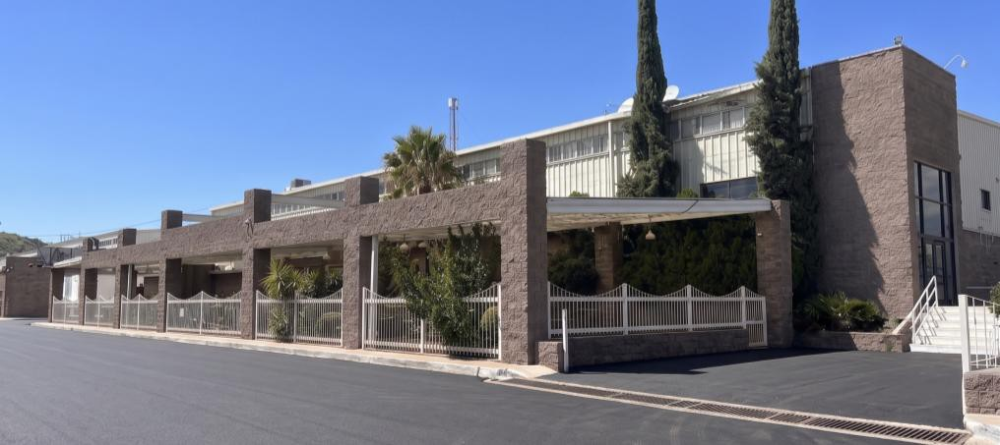
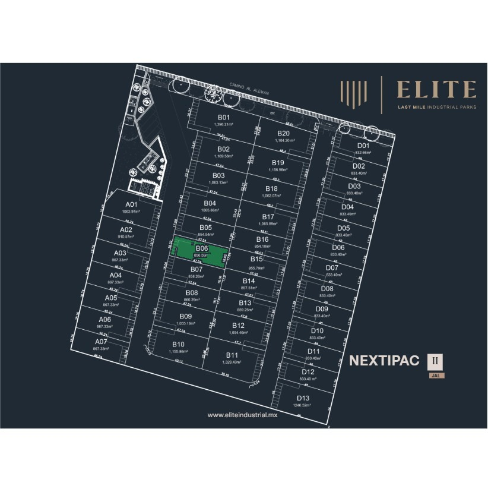
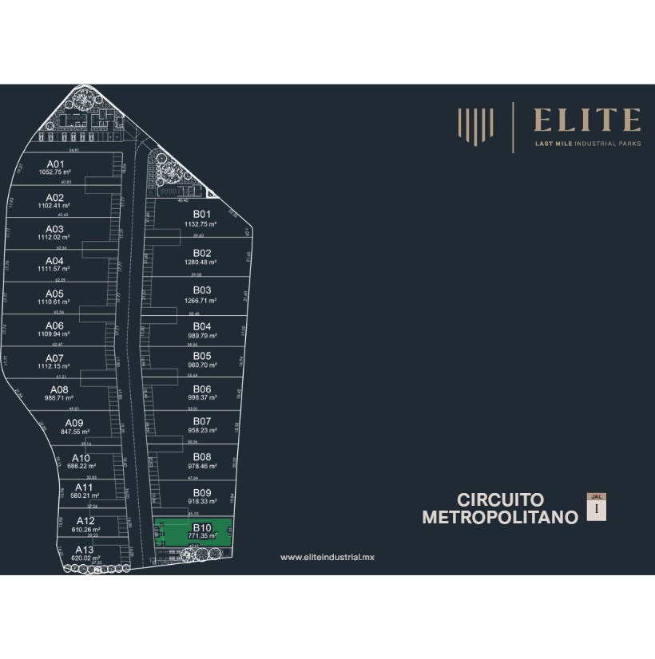
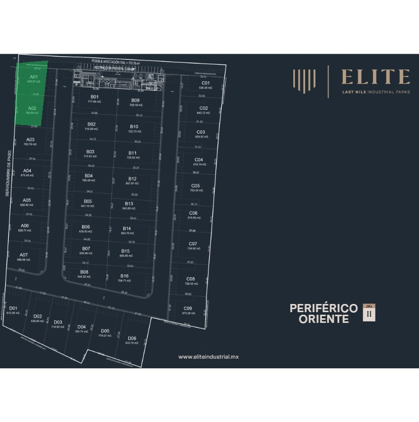

Entrega 2026
← Volver al inicio
Guía e inventario
Naves industriales en renta y venta en México
Klarock comercializa naves industriales en renta y venta en los principales corredores de México: Frontera (San Luis Río Colorado y Nogales), Norte (Monterrey) y Pacífico (Guadalajara y Culiacán). Desde bodegas de 577 m² hasta proyectos Clase AAA de 67,220 m², con especificaciones verificables en cada ficha.
5
ciudades con inventario
577–67,220 m²
rango de superficie
Clase A y AAA
edificios modernos
< 24 h
respuesta de un socio
Inventario disponible

DisponibleNave Industrial Clase A — San Luis Río Colorado
San Luis Río Colorado, Sonora
19,880 m² (214,000 SqFt) · Renta
Ver detalles →
DisponibleNave Industrial Clase A — Edificio 1, INPARK San Luis Río Colorado
San Luis Río Colorado, Sonora
16,964 m² (182,600 SqFt) · Consultar
Ver detalles → Disponible
DisponibleNave Industrial Clase AAA — Ciénega de Flores, Nuevo León
Ciénega de Flores, Nuevo León
67,220 m² rentables (97,777 m² terreno) · Renta
Ver detalles →
Disponible8 Naves Industriales — Parque Industrial San Ramón, Nogales
Nogales, Sonora
8 naves · 1,255 a 17,856 m² (41,349 m² en total) · Renta
Ver detalles →
DisponibleNave A01 — Nextipac II
Zapopan, Jalisco
987.64 m² construidos (1,063.97 m² terreno) · Renta
Ver detalles →Disponible
Nave B06 — Nextipac II
Zapopan, Jalisco
892.00 m² construidos (856.67 m² terreno) · Renta
Ver detalles →Disponible
Nave B18, B19 — Nextipac II
Zapopan, Jalisco
1,976.29 m² construidos (2,219.05 m² terreno) · Renta
Ver detalles →
DisponibleNave A10 — Circuito Metropolitano I
Zapopan, Jalisco
649.01 m² construidos (686.22 m² terreno) · Renta
Ver detalles →Disponible
Nave B10 — Circuito Metropolitano I
Zapopan, Jalisco
761.02 m² construidos (771.35 m² terreno) · Renta
Ver detalles →
DisponibleNave A01 — Periférico Oriente II
Tonalá, Jalisco
576.69 m² construidos (635.87 m² terreno) · Renta
Ver detalles →Disponible
Nave A02 — Periférico Oriente II
Tonalá, Jalisco
695.36 m² construidos (750.86 m² terreno) · Renta
Ver detalles →Disponible
Nave A01, A02 — Periférico Oriente II
Tonalá, Jalisco
1,272.05 m² construidos (1,386.73 m² terreno) · Renta
Ver detalles →Disponible
Nave B10 — Periférico Oriente II
Tonalá, Jalisco
679.08 m² construidos (722.73 m² terreno) · Renta
Ver detalles →Disponible
Nave D02 — Periférico Oriente II
Tonalá, Jalisco
583.10 m² construidos (657.83 m² terreno) · Renta
Ver detalles →Disponible
Nave D02, D03 — Periférico Oriente II
Tonalá, Jalisco
1,245.27 m² construidos (1,390.71 m² terreno) · Renta
Ver detalles →Cómo trabajamos una búsqueda de nave
Un socio director revisa tu requerimiento (superficie, altura, capacidad eléctrica, plazos y ubicación) y te propone alternativas del inventario público y del inventario off-market. También desarrollamos proyectos a la medida (build to suit) y estructuramos operaciones de sale-leaseback.
Qué revisar antes de decidir
Altura libre y capacidad de piso
Definen qué sistema de racks, montacargas y equipos puedes operar. Pide el dato en metros y en toneladas por m².
Andenes y patio de maniobras
Cuenta las posiciones de carga, las rampas niveladoras y el radio de giro disponible para tráileres.
Capacidad eléctrica
Confirma KVA o KW disponibles y la subestación, y compáralos con tu carga actual y tu crecimiento.
Protección contra incendios
Revisa rociadores (FM Global o NFPA), hidrantes y almacenamiento de agua; afectan seguros y operación.
Uso de suelo y permisos
Verifica que la zonificación permita tu giro industrial y que existan las factibilidades de servicios.
Seguridad y certificaciones
Vigilancia 24/7, CCTV y, si exportas, la preparación para programas como CTPAT.
Condiciones del contrato
Moneda (USD o MXN), mantenimiento, plazo forzoso, depósito, actualización de renta y opciones de expansión.
Preguntas frecuentes
¿Cuánto cuesta rentar una nave industrial en México?
Depende de la ciudad, la clase del edificio y la superficie. Como referencia, en el inventario de Klarock en Guadalajara (Zapopan y Tonalá) las rentas publicadas van de $120 a $140 MXN por m² de construcción al mes, más IVA, con mantenimiento por separado. En mercados fronterizos y de exportación las rentas suelen cotizarse en dólares; consulta cada ficha.
¿Cuál es la diferencia entre una nave Clase A y Clase AAA?
No existe una norma oficial única. En general, Clase A y AAA se refieren a edificios modernos con mayor altura libre, mejor capacidad de piso, más andenes, sistemas contra incendio y ubicación en parques con buena infraestructura. Conviene comparar las especificaciones concretas más que la etiqueta.
¿En qué ciudades tiene Klarock naves disponibles?
En Guadalajara (Zapopan y Tonalá), Monterrey (Ciénega de Flores), Nogales y San Luis Río Colorado (Sonora) y Culiacán (Sinaloa).
¿Puedo rentar una nave de menos de 1,000 m²?
Sí. En Zapopan y Tonalá hay naves desde 576.69 m² construidos, con vigilancia 24/7 en parque.
¿Pueden construir una nave a la medida?
Sí. Desarrollamos proyectos a la medida (build to suit) y asesoramos la selección de sitio, el dictamen de viabilidad y los permisos.
Explora por ciudad
- Naves industriales en renta en Guadalajara: Zapopan y Tonalá →
- Naves industriales Clase A en San Luis Río Colorado, Sonora →
- Naves industriales en renta en Nogales, Sonora: Parque Industrial San Ramón →
- Nave industrial Clase AAA en renta en Monterrey (Ciénega de Flores, N.L.) →
- Naves industriales y terrenos en Culiacán, Sinaloa →
¿Te interesa esta oportunidad?
Escríbenos y un socio director te contactará en menos de 24 horas hábiles.
Contactar a un Socio Director